About me.
My passion is coming up with creative ways to express a message, and providing solutions for complex tasks. I'm a huge fan of technology and discovering new programs that help us to make life easier. My past as an industrial designer and researcher at the university gave me a unique vision of user behavior and needs.
My goal as a designer is to unify modeling my knowledge as a researcher, interface designer and industrialist to amplify my perspectives within design.
See my resume here

Skill & Tools
Relevant Skills
- Graphic design
- Industrial design
- Marketing research
- Social networks
- Product handling
- User research (Competitor SWOT Analysis, Usability Heuristics, User flow)
- User Interface Design (Iterative Design, Sketching, Wireframing, Prototyping)
- A / B Preference Testing
Tools I Use
- Adobe XD
- Sketch
- Unsplash
- CorelDraw
- Illustrator
Coding
- HTML
- CSS
- JavaScript